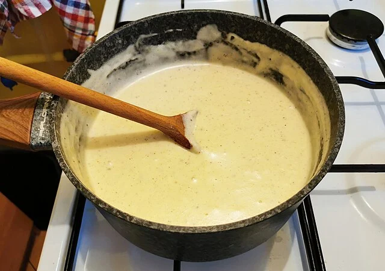

Bechamel Sauce
Home

Jacek Halicki
Own work,
CC BY-SA 4.0, Link
Bechamel sauce, also known as besciamella in Italian cuisine,
is a versatile and creamy white sauce made from butter, flour, and milk.
Ingredients
-
500ml Milk
-
50g Unsalted butter
-
50g Plain flour
-
¼ Teaspoon salt (pinch to taste)
-
Nutmeg (freshly grated)
-
Parmigiano Reggiano (optional)
Instructions
-
In a saucepan, melt the butter over low heat.
-
Add the flour and whisk until smooth.
-
Gradually add the milk, heating slowly without bringing to the boil.
Stir vigorously with a whisk to prevent lumps from forming.
Keep mixing continuously for 10-15 mins until you have a smooth velvety thick consistency.
-
Season with salt and nutmeg to taste.
For a rich luxurious flavour add a little (20-30g) Parmigiano Reggiano.